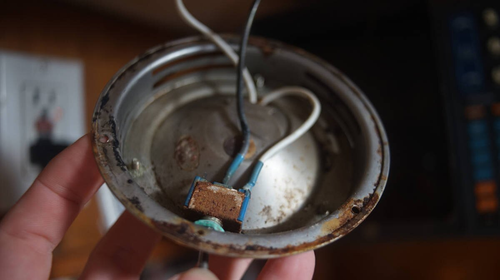
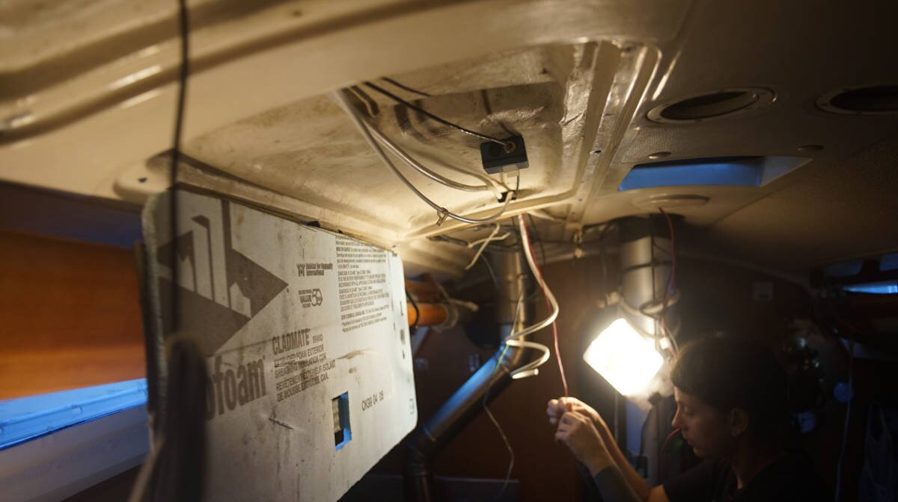
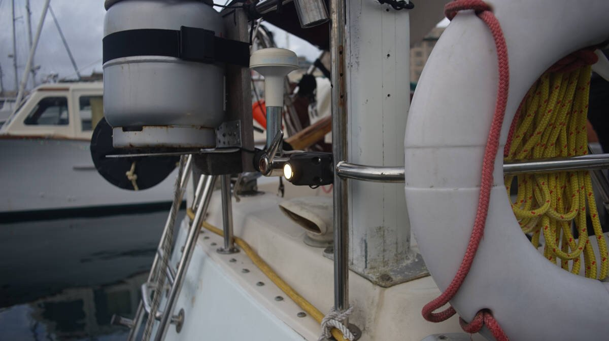
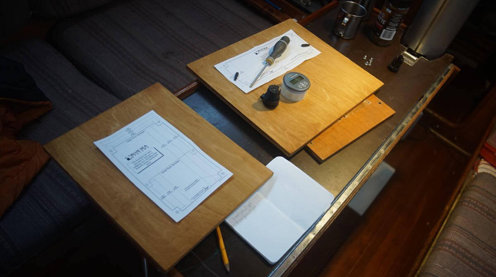
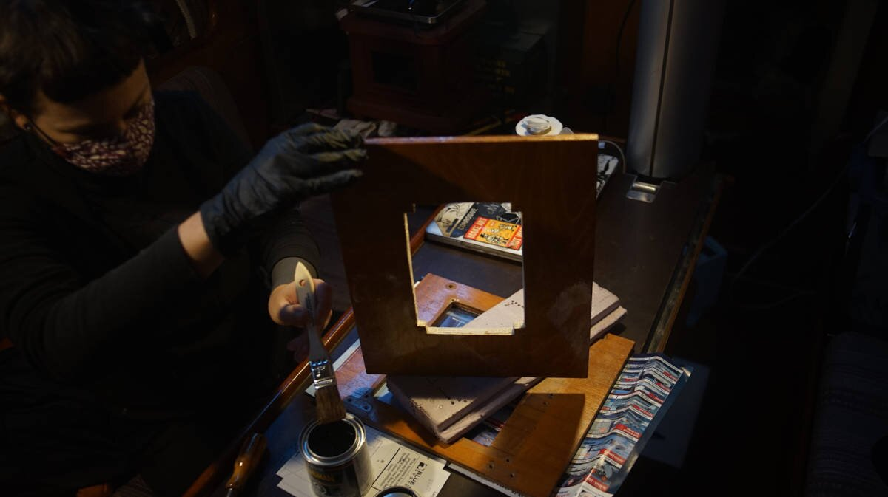
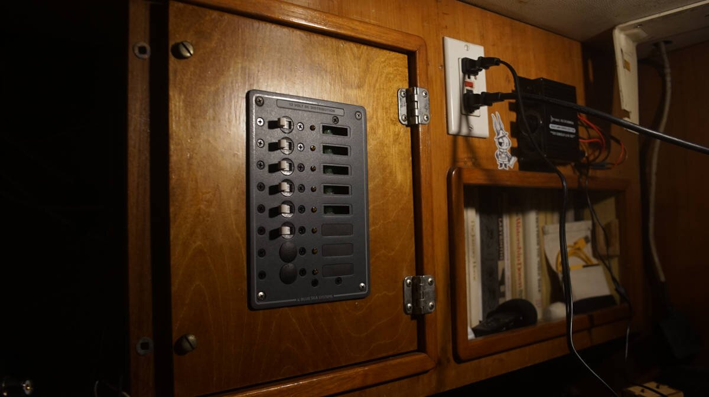
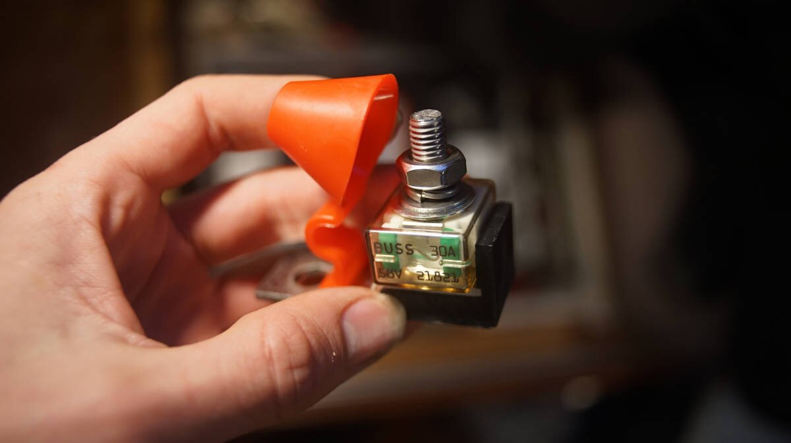
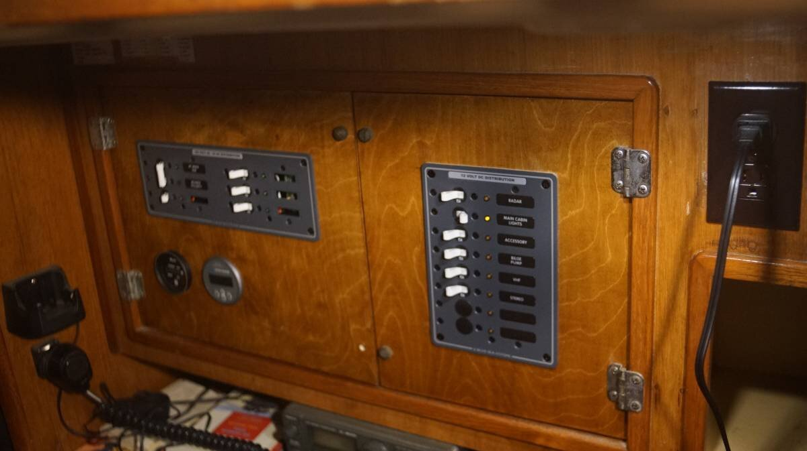

electrical refit
22.11.29
Victoria, BC. Canada.
This page is a work in progress... as we are doing this project right now. Every line is subject to change.

Pino looks well-ordered when standing inside the cabin, but a peek behind the wall and ceiling panels reveals a nightmarish scene. The boat has fewer systems than it used to, but a lot of the old wiring is still there, tangled and trapped with other important wires. Because of this tangled mess it is difficult to see what is what. In the fall of 2022, we decided that it was time to tackle this dreaded, but necessary project.
Shore power. Being connected to shore power was important for this electrical re-fit, we have to remove all the wiring on the DC side while still being able to cook and to keep Pino lit. With shower power, we can cook using our induction cooktop, and we use two bright 120V clamp lights to light up work areas.
Removing all connections from the DC breaker panel. At first, we were careful to identify each wire, adding labels as we removed them from the breaker panel, thinking that we could use them as leading wires, but that turned out to be a silly idea. Most of the old wiring was bound together in a thick braid by electrical tape, routed through an inaccessible maze of narrow pipes throughout the boat. The wires were packed in so tight that nothing would move in either direction.

We were able to remove a lot of the old wiring, but not all of it. After seeing this we decided to only run wires through parts of the boat we had access to.
Cabin lights
Some nights at anchor, we had to watch which light was on and for how long because some would draw the battery down too much. A single light ought not to draw down the battery that much, fixing this problem was our top wiring priority. After inspection, we found that our main cabin lights had the jankiest wiring we'd ever seen.
We had to find alternate paths for the new wiring for most of the cabin lights, because the old paths were unusable.

Our friend Peter(MV Geordie) bought a bunch of LED potted deck lights for his boat. We took 3 lights with plans to replace the two rusty dome lights in the galley, and the one over the navigation table.
The lights mount flush on the ceiling, the metal is high grade SS, each draws 0.6W, IP67 waterproof, and FT1 fireproof and insulated. Multiple lights can be wired in parallel, by way of waterproof connectors. These lights don't have switches, so we had to wire one in.

The two galley lights are daisy chained and make use of the same switch. The light over the navigation table also has its own separate switch because we don't always want to have all of the lights on at the same time, the daisy chained galley lights are the one exception. All of the cabin lights are on the same breaker circuit.
Not all of the domes were bad, we got rid of two but cannibalized one for its switch. The switch of those dome lights fail sometimes, and it is good to have spares.
Wiring
The size of the wiring on a boat depends on the length of the cable (if powering a light say, measure from the power source to the light and back), and on the current(amperage) that will flow through it. The longer the cable, or the more current runs through it, the thicker it ought to be.
When sizing cables (esp for high-power circuits) add some extra margin for safety, due to numerous factors (heat, extra load etc) some appliances may use more current than what they are rated for. See this article for help sizing cables.
When choosing wiring, we made sure that the wire had:
- Multiple strands, which makes it more flexible while minimizing work hardening and fractures.
- Good quality insulation, rated for high temperatures, and is oil and moisture resistant.
Tinned wire, yes or no? Tinned wire is more corrosion resistant, but if the wire terminations are hermetically sealed (using heat-shrink crimp terminals), un-tinned wire will be more than adequate.
marine wire termination

The above is a connection we found in Pino's ceiling while re-doing the wiring, this is how a previous owner spliced some of the cabin lights together. This splice was tinned, and bound by electrical tape. Making connections like this was more common in the 80's, but doesn't fly in 2022. On a boat there is a lot of movement, and vibrations, which overtime can loosen the connection.
The major difference between a thing that might go wrong and a thing that cannot possibly go wrong is that when a thing that cannot possibly go wrong goes wrong it usually turns out to be impossible to get at and repair.
— Douglas Adams
List of connection DONT's
- Never use electrical tape over connections
- Never solder wires together, they ought to be mechanically connected
- Never twist wires together (too much resistance)
- Never connect wires together with household "wire nuts"
- Never wrap a bare wire around a terminal screw to connect wires together
List of connection DO's
- Use terminals that are made from tin plated copper, not aluminum
- Use only plastic, not metal, clips to secure the wiring
- Use ring terminals over spade terminals, ring terminal can't pull off
- After crimping, always do a pull test(to make sure it won't come apart)
- Always cover crimped connections with heat-actived, adhesive-lined heat shrink tubing
- Use a heat gun for uniform heat-shrinking, an open flame will lead to uneven melting of the adhesive, distortions in the insulation and can lead to leaks, bubbles & voids
- Use a good quality crimper that can double crimp
Do your hands a favor, get/borrow good tools. Pino has a shitty wire stripper/crimper that destroys all it touches, including our fingers. A friend lent us his Ancor crimp tool.

Ring connectors are sized to wires, and are color-coded for each gauge size:
Pink - 22-18 AWG
Yellow - 12-10 AWG
Blue - 16-14 AWG
Using butt connectors to splice wires? We've been splicing wires together with butt connectors for a while now, sometimes it is the only option available. It is always better to use uncut wire, and if possible to make the splice using a gang terminal bus.
Splicing circuits should be avoided. If splicing is necessary, it should employ a proper terminal block, and not butt connectors. Every splice in a circuit creates additional resistance, and the potential for the connection to come apart.
— David H. Pascoe, Marine Surveyor

Read more about marine wire termination(Marine How-To).
The Mast
Pino has the following systems wired up through the mast: Radar, the wind meter, the spreader lights, a steaming light, and an anchor light. All of these wires run through the ceiling and up through a hole in the mast.
We decided to remove the spreader lights, they draw too much and we don't use them. During our trip across the north pacific ocean one of the lights broke off in part, and was hanging from its wires, but threatened to fall on our heads. We secured it with tape, and it has held since then but now is time for them to go. Removing the spreader lights meant climbing up to the first set of spreaders to drill out some rivets. Removing the cut wiring from the inside was easy enough.
We plan to run new wiring for the steaming light, and in time we'll change the halogen anchor light for an LED. Changing the anchor light is tricky, we don't have mast steps and the bosun's chair won't get us high enough to see the top of the mast.
The wires for the steaming light (now an LED) and the anchor light (still a halogen) will be led back to the near panel, both will share the same power (same breaker switch), although each will have their own on/off switch, because we don't want both to come on at once.
Running Lights

While replacing the light inside the aft running light holder for an LED, we dropped the cover in the water and it sank. We grabbed some hard wood, made two screw holes, added silicone where the wood would meet the top of the holder, and overtop of the screws to prevent water ingress.

We removed the cover to replace the wiring, and found the light was full of water. The water found a way in, but had no way of draining out. It was finally time to retire this light, it had a good 40-year run.
We weren't sure what to replace it with. Light holders are expensive, and will eventually suffer the same problem. We decided to use a potted light. The light is completely enclosed, and is good for indoor/outdoor use.

As a holder, we used an old Scotty fishing rod holder we had, it belonged to one of Pino's former owners (we don't fish, we're vegan heh). We kept it because we thought we could use it for something else, but is has been hanging on the stern rail for years. We found that the potted light fit the hole perfectly!
The light is very bright, and will be visible from the back, but we are not certain that this meets Transport Canada regulations. The light may not be as visible from the side. We'll test it at night at an anchorage and see if whether or not it is visible, if it isn't, we'll make some modifications.
The compass light is wired onto the same breaker circuit, we put in a switch to have the option of turning it on/off.
DC Breaker Panels

Overtime, we removed and added a lot of systems onboard. Before we buy a breaker panel, we have to figure out how many switches we need...
We finally decided on 16 switches. Our previous DC system had 22 switches split over 3 panels, we're keeping the more modern 8-switch panel, and replacing the two antique 7-switch panels.
Panel 1
- Manual bilge pump
- VHF
- USB outlets
- Stereo
- Main cabin lights ( + head fan w/ switch, + 2 lights with their own switches)
- Radar
Panel 2
- LPG
- Chartplotter
- Depth Sounder
- Anchor light
- Steaming light
- AIS
- Sailing instruments
- Running lights (front + back + compass light)
Over the years we've removed many DC systems, like the macerator(we have a dry toilet now), and refrigeration. And now, we've combined some systems on the same breakers (see above list for examples of such combinations).
The new Blue Sea breaker panel is wider and shorter than our former panels, we had to make a new wood panel to support it.
We went to the hardware store and had a short length of birch cut to size, matching the dimensions of our former breaker panel doors. The hardware store has a bench saw, and makes cuts for a small fee (convenient for us). Birch is light-colored, so to try and match the rest of the wood we stained it with instant coffee. To match the wood, we had to make 3 coats.
We don't have a jigsaw, and our handsaw can't cut within another shape, so we had to cut the door by first making holes with a drill, then by chipping away at the edges with a wood chisel and a hammer, until we could fit a saw blade. We sanded the inside edges.
Because the wood isn't rot resistant like some hardwoods, we added 3 coats of varnish. The finished door looks amazing...! We fitted the old hinges and screws.
Below is a view inside one of the two DC breaker panels that we have, with everything connected.

Battery protection
All battery banks ought to have a fuse placed within 7 wire inches, putting an MRBF terminal fuse block on the positive battery post provides high current protection without having to cut wires. The fuse will protect the battery cables from over heating and melting. We got the fuse holder as well as a 30 amp fuse(sized for our system).
There can be only one circuit connection to a terminal Fuse (sitting over the fuse, after the battery), everything else, whether it be sense wires, or an automatic bilge pump, must be before the fuse.
The fuse has a clear housing, which makes it easy to check if its blown. The only downside is that it does add some height to the top of the battery, luckily we had enough vertical clearance for it and the cover to fit overtop.
See this page[PDF] for installation instructions.
Bilge pump
Our bilge pump is an Orca Auto 82L automatic model. We bought it in Japan after our former setup failed(water puppy pump, plus a float switch). The float switch failed first, we replaced it, then the pump failed.
The unit is sold with a fuse housing that isn't waterproof (we didn't realized that at the time). Our fuse runs under the floor, as most bilge pump wiring tends to do, and when we opened it to check it we found that the fuse was completely corroded. It sucks that these pumps are sold with connections that will inevitably fail.
We cut the old fuse housing, and bought a very adorable waterproof housing to replace it.

The wires for the manual side were crimped together with a very non-marine butt connector. To remedy this, we added a heat-shrink ring terminal to both ends, and led them to a small 2x2 gang terminal(with a jumper between both). Another wire was then led back to the breaker panel.
Battery Monitor

Pino had a meter displaying the voltage of the two sets of batteries, but never had a monitor that could tell us the state of charge of the batteries, or the ampere hours consumed.
Salesperson: "We sell this smart battery monitor that pairs with your phone via Bluetooth, and sends-"
Us: "Uh, do you have, like, the dumb version of this?"
Salesperson: "Yes, I think we might have some in the basement..."
Many of the battery monitors on the market are 'smart', they pair with your phone and can be monitored with an app—we did not want this. Victron produces a model that isn't as smart: the BMV 700.
On the BMV 700 unit, all electrical connections are to the quick connect PCB on the current shunt. The shunt connects to the monitor with a standard RJ12 telephone cable. The set comes with the aforementionned RJ12 cable (10m) and battery cable with fuse (2m).
AC wiring
The AC on the boat was also on our to-do list, but we didn't expect the wiring to be that problematic. We found wires with holes in the insulation, some terminals had corrosion, and many of the outlets had rust.

We bought new outlets at the hardware store (marine versions aren't all that different, all they've got is a higher price tag), we also bought covers for all of them. Most of the former outlets on Pino did not have covers, nothing protecting the metal from moisture. The outlets looked fine on the outside, but weren't at all healthy-looking underneath.
We also bought a roll of AC wiring. All three wires (white, black and green) are tucked into a sleeve, making it easy to route it throughout the boat.
All of our 120V outlets (5 of them) were wired on the same breaker, but that's not ideal, especially when using higher-current appliances like an induction stove (we use one when in port to save on lpg, see induction cooking). Now, we will separate the outlets on 3 different 15A breakers (Pino is a 30A boat): one will be reserved for computers and a heater in the winter, another for the galley, and an additional one for a second heater, or whatever else we need. Our new breaker panels has room for 4 breakers, the fourth is reserved for the battery charger.
Like on the DC side, a lot of the AC wiring is hard to wrench out of the walls, and so we made the decision to move two of the outlets elsewhere on the boat. We had two outlets that were low, near the floor and below the waterline. We placed the new ones way high, protecting them from moisture, but also making it easier for us to route new wires. The pilot berth is now housing a lot of wiring, but all of is runs behind our bookcase, strung from the ceiling, out of view.
More soon...
Read more about marine electrical wiring:
Tips on
Electrical System Use and Maintenance, David H. Pascoe, Marine surveyor.